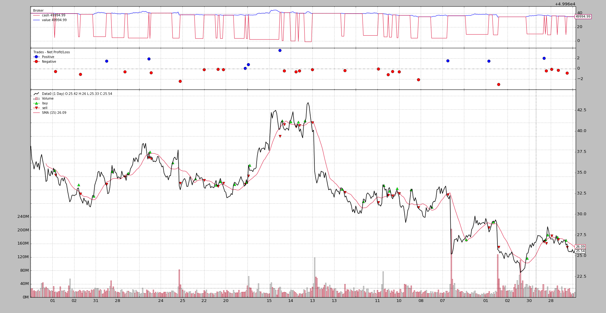

Sizers - Smart Staking¶
A Strategy offers methods to trade, namely: buy, sell and
close. Let’s see the signature of buy:
def buy(self, data=None,
size=None, price=None, plimit=None,
exectype=None, valid=None, tradeid=0, **kwargs):
Notice that size has a default value of None if the caller does not
specify it. This is where Sizers play an important role:
size=Nonerequests that the Strategy asks its Sizer for the actual stake
This obviously implies that Strategies have a Sizer: Yes, indeed!. The
background machinery adds a default sizer to a Strategy if the user has not
added one. The default Sizer added to a strategy is SizerFix. The
initial lines of the definition:
class SizerFix(SizerBase):
params = (('stake', 1),)
It is easy to guess that this Sizer simply buys/sells using a stake of
1 units (be it shares, contracts, …)
Using Sizers¶
From Cerebro¶
Sizers can be added via Cerebro with 2 different methods:
addsizer(sizercls, *args, **kwargs)Adds a Sizer that will be applied to any strategy added to cerebro. This is, so to to say, the default Sizer. Example:
cerebro = bt.Cerebro() cerebro.addsizer(bt.sizers.SizerFix, stake=20) # default sizer for strategies
addsizer_byidx(idx, sizercls, *args, **kwargs)The Sizer will only be added to the Strategy referenced by
idxThis
idxcan be gotten as return value fromaddstrategy. As in:cerebro = bt.Cerebro() cerebro.addsizer(bt.sizers.SizerFix, stake=20) # default sizer for strategies idx = cerebro.addstrategy(MyStrategy, myparam=myvalue) cerebro.addsizer_byidx(idx, bt.sizers.SizerFix, stake=5) cerebro.addstrategy(MyOtherStrategy)In this example:
- A default Sizer has been added to the system. This one applies to all strategies which don’t have a specific Sizer assigned
- For MyStrategy and after collecting its insertion idx, a specific sizer (changing the
stakeparam) is added- A 2nd strategy, MyOtherStrategy, is added to the system. No specific Sizer is added for it
- This means that:
- MyStrategy will finally have an internal specific Sizer
- MyOtherStrategy will get the default sizer
Note
default doesn’t mean that that the strategies share a single Sizer instance. Each strategy receives a different instance of the default sizer
To share a single instance, the sizer to be shared should be a singleton class. How to define one is outside of the scope of backtrader
From Strategy¶
The Strategy class offers an API: setsizer and getsizer (and a
property sizer) to manage the Sizer. The signatures:
def setsizer(self, sizer): it takes an already instantiated Sizerdef getsizer(self): returns the current Sizer instancesizerit is the property which can be directly get/set
In this scenario the Sizer can be for example:
Passed to the strategy as a parameter
Be set during
__init__using the propertysizerorsetsizeras in:class MyStrategy(bt.Strategy): params = (('sizer', None),) def __init__(self): if self.p.sizer is not None: self.sizer = self.p.sizerThis would for example allow to create a Sizer at the same level as the cerebro calls are happening and pass it as a parameter to all strategies that go in the system, which effectevily allows sharing a Sizer
Sizer Development¶
Doing it is easy:
Subclass from
backtrader.SizerThis gives you access to
self.strategyandself.brokeralthough it shouldn’t be needed in most cases. Things that can be accessed with thebroker
data’s position with
self.strategy.getposition(data)complete portfolio value through
self.broker.getvalue()Notice this could of course also be done with
self.strategy.broker.getvalue()Some of the other things are already below as arguments
Override the method
_getsizing(self, comminfo, cash, data, isbuy)
comminfo: The CommissionInfo instance that contains information about the commission for the data and allows calculation of position value, operation cost, commision for the operationcash: current available cash in the brokerdata: target of the operationisbuy: will beTruefor buy operations andFalsefor sell operationsThis method returns the desired
sizefor the buy/sell operationThe returned sign is not relevant, ie: if the operation is a sell operation (
isbuywill beFalse) the method may return5or-5. Only the absolute value will be used by the sell operation.
Sizerhas already gone to thebrokerand requested the commission information for the given data, the actual cash level and provides a direct reference to the data which is the target of the operation
Let’s go for the definition of the FixedSize sizer:
import backtrader as bt
class FixedSize(bt.Sizer):
params = (('stake', 1),)
def _getsizing(self, comminfo, cash, data, isbuy):
return self.params.stake
This is pretty simple in that the Sizer makes no calculations and the parameters are just there.
But the mechanism should allow the construction of complex sizing (aka positioning) systems to manage the stakes when entering/exiting the market.
Another example: A position rerverser:
class FixedRerverser(bt.FixedSize):
def _getsizing(self, comminfo, cash, data, isbuy):
position = self.broker.getposition(data)
size = self.p.stake * (1 + (position.size != 0))
return size
This one builds on the existing FixedSize to inherit the params and
overrides _getsizing to:
- Get the
positionof the data via the attributebroker- Use
position.sizeto decide if to double the fixed stake- Return the calculated value
This would remove the burden from the Strategy to decide if a position has to be reversed or opened, the Sizer is in control and can at any time be replaced without affecting the logic.
Practical Sizer Applicability¶
Wihtout considering complex sizing algorithms, two different sizers can be
used to turn a strategy from Long-Only to Long-Short. Simply by changing the
Sizer in the cerebro execution, the strategy will change behavior. A very
simple close crosses SMA algorithm:
class CloseSMA(bt.Strategy):
params = (('period', 15),)
def __init__(self):
sma = bt.indicators.SMA(self.data, period=self.p.period)
self.crossover = bt.indicators.CrossOver(self.data, sma)
def next(self):
if self.crossover > 0:
self.buy()
elif self.crossover < 0:
self.sell()
Notice how the strategy doesn’t consider the current position (by looking at
self.position) to decide whether a buy or sell has to actually be
done. Only the signal from the CrossOver is considered. The Sizers will
be in charge of everything.
This sizer will take care of only returning a non-zero size when selling if a position is already open:
class LongOnly(bt.Sizer):
params = (('stake', 1),)
def _getsizing(self, comminfo, cash, data, isbuy):
if isbuy:
return self.p.stake
# Sell situation
position = self.broker.getposition(data)
if not position.size:
return 0 # do not sell if nothing is open
return self.p.stake
Putting it all together (and assuming backtrader has already been imported and a data has been added to the system):
...
cerebro.addstrategy(CloseSMA)
cerebro.addsizer(LongOnly)
...
cerebro.run()
...
The chart (from the sample included in the sources to test this).
{kind=link}
The Long-Short version simply changes the Sizer to be the FixedReverser
shown above:
...
cerebro.addstrategy(CloseSMA)
cerebro.addsizer(FixedReverser)
...
cerebro.run()
...
The output chart.

Notice the differences:
- The number of trades has duplicated
- The cash level never goes back to be the value because the strategy is always in the market
Both approaches are anyhow negative, but this is only an example.
bt.Sizer Reference¶
-
class
backtrader.Sizer¶ This is the base class for Sizers. Any sizer should subclass this and override the
_getsizingmethodMember Attribs:
strategy: will be set by the strategy in which the sizer is workingGives access to the entire api of the strategy, for example if the actual data position would be needed in
_getsizing:position = self.strategy.getposition(data)
broker: will be set by the strategy in which the sizer is workingGives access to information some complex sizers may need like portfolio value, ..
-
_getsizing(comminfo, cash, data, isbuy)¶ This method has to be overriden by subclasses of Sizer to provide the sizing functionality
- Params:
comminfo: The CommissionInfo instance that contains information about the commission for the data and allows calculation of position value, operation cost, commision for the operationcash: current available cash in the brokerdata: target of the operationisbuy: will beTruefor buy operations andFalsefor sell operations
The method has to return the actual size (an int) to be executed. If
0is returned nothing will be executed.The absolute value of the returned value will be used